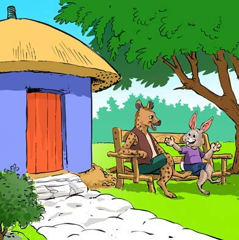
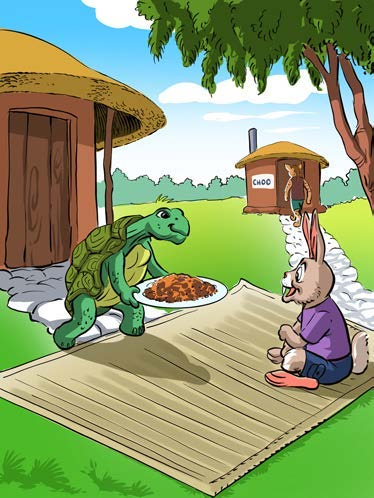
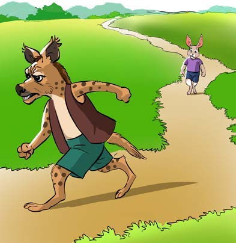
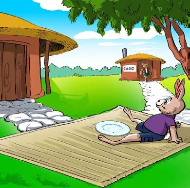

Kuandika hadithi fupi kwa mtiririko sahihi wa
matukio
Shughuli ya tano
Andika hadithi fupi kwa mtiririko sahihi wa matukio
kutokana na picha zifuatazo:
Kuandika hadithi fupi kwa mtiririko sahihi wa
matukioShughuli ya tano
Andika hadithi fupi kwa mtiririko sahihi wa matukio
kutokana na picha zifuatazo:
Chunguza picha sita au michoro mguso, kisha andika hadithi fupi kwa mtiririko sahihi wa matukio; tumia eneo la kuandikia, kibodi au Breli.
Fisi na sungura wanasimama karibu na nyumba yenye moshi.

Sungura na kobe wamekaa chini ya mti karibu na nyumba.Fisi anamshika sungura mkono wanapotembea njiani.

Kobe anampa sungura sahani ya chakula mbele ya nyumba.

Fisi anakimbia huku sungura akionekana kwa mbali njiani.

Sungura amekaa karibu na sahani tupu mbele ya nyumba.